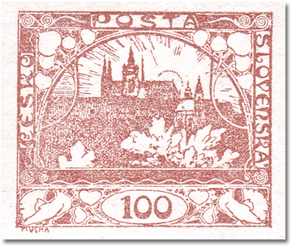
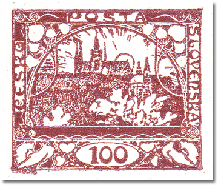
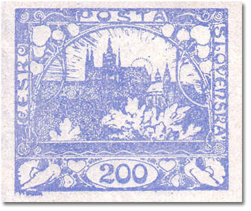
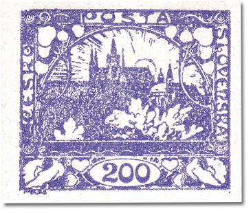
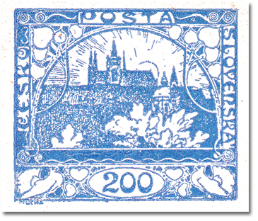
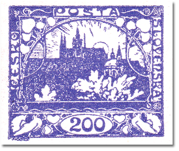
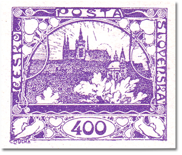
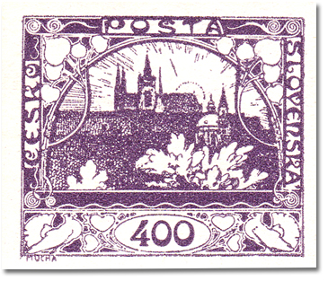

Second design
The second design of the Hradčany issue. The values printed from it are listed below, each with its shades, catalogue numbers, print run and date of issue.
100h – brown
| Shade | POFIS | MERKUR | Plates |
|---|---|---|---|
| brown | 20 | 20 | 2 |
| dark brown | - | 20a | 2 |
Print run: Imperforate 23 340 000 · Perforation: – · Date of issue: 14. 1. 1919 · Závoje a skvrny: 60/2 · Plate diagrams


200h – ultramarine
| Shade | POFIS | MERKUR | Plates |
|---|---|---|---|
| ultramarine | 22 | 22 | 2 |
| violet-blue / blue-violet | 22a | 22a | 2 |
| blue | 22b | 22b | 2 |
| dark blue | - | 22c | 2 |
Print run: 11 697 000 (imperf. 7 510 000, officially perf. 4 187 000) · Perforation: 13¾ : 13½ comb · Date of issue: 14. 1. 1919 · Plate diagrams




400h – blue-violet
| Shade | POFIS | MERKUR | Plates |
|---|---|---|---|
| blue-violet / light violet | 24 | 24 | 2 |
| dark violet | - | 24a | 2 |
Print run: Imperforate 5 780 000 · Perforation: – · Date of issue: 29. 1. 1919 · Plate diagrams

